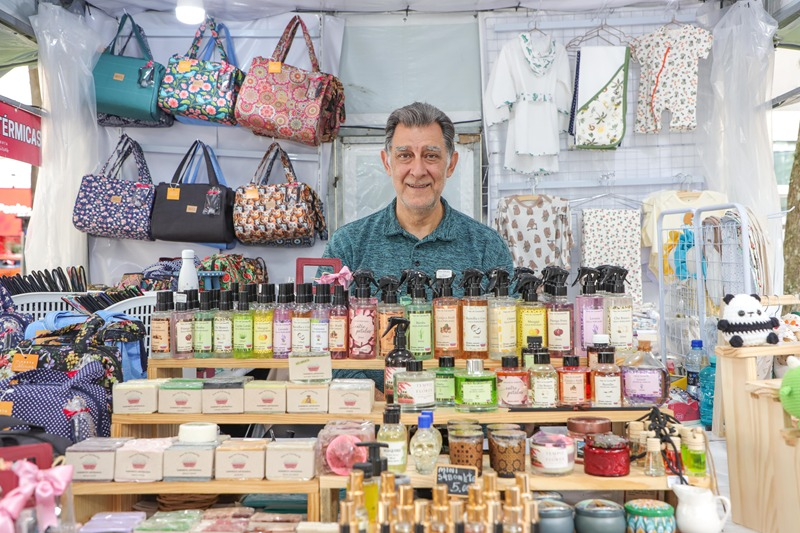

ONDE ENCONTRAR
Vamos nos
encontrar?
Encontre nossos produtos artesanais para banho e perfumação nas feiras e no Empório. Veja os horários e escolha o melhor dia para visitar.
Escolha um caminho.
O cuidado do Manu está nos pequenos detalhes.

Um aroma, uma textura,
uma escolha com calma.
encontrar os cuidados do Manu.
NA NOSSA AGENDA
Feiras e encontros
especiais.
Um próximo encontro
vem por aí.
Assim que houver novas datas, elas aparecem por aqui. Enquanto isso, conheça os pontos fixos ou converse com o Manu.
Ver os pontos fixosEncontros que já aconteceram
A programação das feiras pode variar de acordo com as condições climáticas. Sempre avisamos nos nossos stories quando há alguma alteração.
PARA FAZER PARTE DA ROTINA
Nossos pontos
de encontro.
Endereços para encontrar os produtos
do Manu ao longo da semana.
Converse com o Manu para saber onde encontrar os produtos.
VAMOS COMBINAR?
O Manu ajuda
você a chegar.
Quer confirmar um horário, escolher um produto ou saber sobre a próxima feira? Pode chamar. Esperamos sua visita!